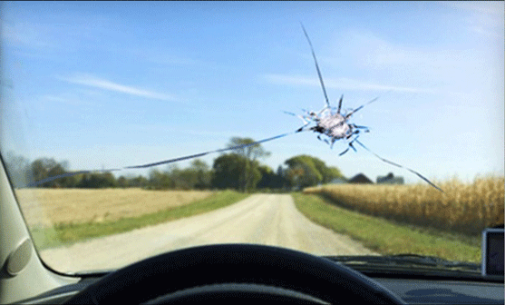
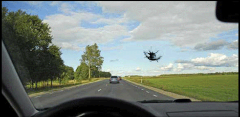
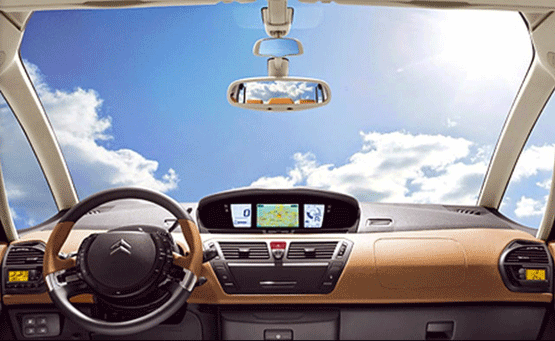
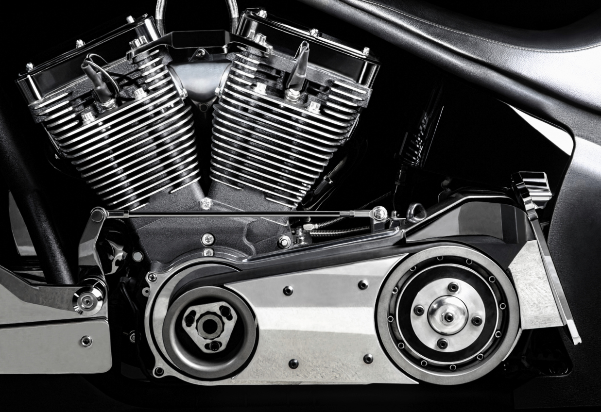

We offer mobile windshield replacement in Culver City, CA. Our company has been serving the West Los Angeles area for more than a decade. Give us a call today and let us take care of you auto glass repair or replacement needs. We can be reached at (424) 209-7131.




We have been serving the West Los Angeles area for more than 10 years. We can do windshield repair in Culver City, auto glass repair and car window reppair in Culver City. Give us a call today for yor estimate and get free mobile service. Our technician are trained to performa a professional replacement on your vehicle. You will be 100% satisfied with our service. Talk to one of our auto glass representatives today. We have mobile units that can deliver our service to your door steps. The replacement can take place at your work or office. We provide same day service on most parts when we have it in stock. Some parts needs to be ordered and will take some time to arrive. We can replace the followings: windshield replacement, driver side window repair, passenger side window repair, back glass window replacement, vent window repair, quarter panel window replacement and more. Talk to us about your car window repair issue and we will be happy to assist you.
The windshield replacement in Culver City process takes about an hour to be completed. We use only high quality parts and materials. All our windshield are factory approved and OEM Equilvalent. They meet or exceeds the factory specifications. Get your replacement today. The drive away time varies depending on the weather conditions such as humidity and temperature. Our technician can give you more detail on how long the car needs to sit before it can be driven. Most of the time it will just take a couple of hours. Our fast cure adhesive will reduce the curing time. Call us and we will put you back on the road in no time.
Are you in need of auto glass replacement or windshield replacement services in Culver City California? Look no further than our mobile auto glass service! With over 10 years of experience, we have the expertise and knowledge to provide the highest quality auto glass replacement services. We offer free mobile service in the Culver City California area, meaning we'll come to you! Our fully equipped mobile units are ready to handle any auto glass replacement job, big or small. We understand that having a damaged windshield or car glass can be a hassle, and that's why we aim to make the replacement process as easy and convenient as possible. In addition to providing mobile auto glass replacement services, we also vacuum shattered glass from your vehicle, leaving it clean and safe. We offer both safety laminated glass and tempered glass options, ensuring that your vehicle is up to safety standards. We only use premium quality glass for all our replacement services, including OEM equivalents, so you can rest assured that your replacement glass will match the original quality of your vehicle. We also offer rain sensor and lane departure warning system options to ensure that your new windshield is as safe and functional as possible. At our mobile auto glass service in Culver City California, we take pride in providing exceptional customer service and quality auto glass replacement services. Contact us today for all your auto glass replacement needs, including windshield replacement, mobile car glass replacement, auto glass replacement, mobile windshield replacement, and car glass replacement.
Mobile Auto Glass Replacement in Culver City, California: Ensuring Safety and Quality Introduction: When it comes to auto glass replacement and windshield services in Culver City, California, our company stands out with over 15 years of experience in the industry. We are dedicated to providing top-notch service, using premium quality glass and adhering to safety standards. With our fully equipped mobile units, we bring convenience and expertise right to your doorstep. Whether you need a windshield replacement, car glass repair, or any other auto glass service, we have you covered. We understand that your time is valuable, which is why we offer free mobile service throughout Culver City, California. Gone are the days of driving to a brick-and-mortar shop and waiting for hours. Our technicians will come to your preferred location, be it your home, workplace, or any other convenient spot. Our fully equipped mobile units ensure that we have all the necessary tools and materials to complete the job efficiently and effectively. Mobile auto glass replacement in Culver City and windshield replacement in Culver City, CA. Your safety is our utmost priority. That's why we provide safety laminated windshields and tempered glass windows for all our replacements. These materials offer enhanced protection in case of accidents by preventing the glass from shattering into dangerous shards. Additionally, we strictly adhere to safety standards to ensure that your vehicle meets all necessary requirements. Premium Quality Glass and OEM Equivalents: We believe in using only the best materials for our customers. Our premium quality glass ensures clarity and durability, providing you with a long-lasting solution. Furthermore, we offer OEM equivalents, which are glass products that meet or exceed the original equipment manufacturer's standards. This ensures a seamless fit and compatibility with your vehicle, maintaining its integrity and value. Auto glass in Culver City. Call for a quote today. Dealing with shattered glass can be a daunting task, but our technicians are trained to handle it efficiently. When we replace your auto glass, we take the extra step of vacuuming any shattered glass particles, ensuring a clean and safe environment inside your vehicle. You can trust us to leave no trace of the previous damage, giving you peace of mind. We understand that modern vehicles often come equipped with advanced features. That's why we offer specialized services such as rain sensing windshields and Lane Departure Warning System (LDWS) windshields. Rain sensing windshields automatically adjust wiper speed based on rainfall intensity, enhancing visibility and safety during inclement weather. LDWS windshields use advanced camera technology to monitor lane markings and alert the driver if the vehicle drifts out of its lane. Our technicians are well-versed in handling these advanced features, ensuring their proper installation and functionality. When it comes to mobile auto glass replacement and windshield services in Culver City, California, our company is the one to trust. With over 15 years of experience, we provide free mobile service, ensuring convenience for our valued customers. Our commitment to safety and quality is reflected in our use of laminated windshields, tempered glass, premium quality glass, and OEM equivalents. We go the extra mile by vacuuming shattered glass and offering specialized services like rain sensing windshields and LDWS windshields. Choose us for all your auto glass needs and experience exceptional service that exceeds your expectations.
Give us a call — we're happy to answer any questions.
Call Now · (424) 209-7131